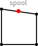
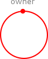
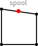
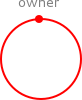

Room |
 User |
 Spool |
 Printer |
 Job |
Alexander Faithfull, Gian Perrone, and Thomas
T. Hildebrandt
IT University of Copenhagen, Denmark
{alef,gdpe,hilde}@itu.dk
|
Room |
User |
Spool |
 Printer |
 Job |

The MoveRoom rule matches a User (represented by a U control), and selects any two rooms that are connected by some name a. It then permits the user to move to the other room, leaving the contents of each room otherwise unchanged.

FinishJob captures the idea of a printer finishing a job (by executing the actual print process), and the job is therefore removed completely from the system by this rule, disconnecting it from its associated user.

JobToPrinter transfers a job from the spool to a printer (represented by a P control) that is co-located with the user associated with that job.
JobToSpool allows a print job (represented by a J control) to be transferred from a user (represented by a U control) to a spool (represented by an S control), adding an identifying link to connect users to their submitted print jobs.